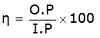
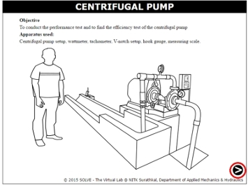
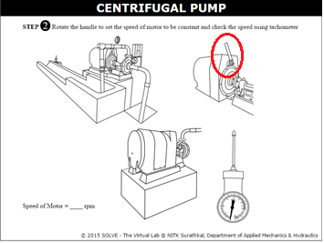
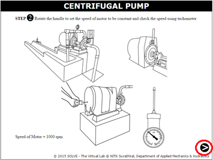
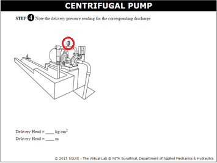
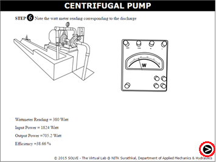

Centrifugal pump is a roto-dynamic machine that imparts energy to fluid by rotating impeller to increase the pressure of a fluid. These pumps are commonly used to move liquids through a piping system. When the fluid enters the pump impeller along or near to the rotating axis it is accelerated by the impeller, flowing radially outward into a diffuser or volute chamber (casing), from where it exits into the downstream piping system. Centrifugal pumps are used for large discharge through smaller heads.
The fluid enters the inlet of the centrifugal pump under atmospheric pressure, and flows into the eye of the impeller. The Centrifugal force exerted on the liquid by the rotating impeller, moves the liquid away from the impeller eye and out along the impeller vanes to their extreme tip where the liquid is then forced against the inside walls of the volute and out through the discharge of the pump.


Due to the reduction of pressure occurring at pump inlet and impeller eye, liquid is drawn into the pump in continuous flow as it moves through the pump. The shape of the volute is wider at discharge point which permits the liquid to expand, and slows down the motion of the liquid. When the water from the impeller strikes the side of the volute, the velocity is increased. This accelerated motion is called “Kinetic Energy”, which is the energy in motion. As soon as the liquid slows down inside the volute, Kinetic Energy is transformed into pressure. This pressure then forces the liquid out of the pump discharge nozzle into the outlet pipe lines.
Impeller:
The energy is transferred from the shaft to the impeller and from the impeller to the water. There are three types of impellers, based on the number of shrouds.
- Open Impeller: The vanes are cast free on both sides.
- Semi-Open Impeller: The vanes are free on one side and enclosed on the other.
- Closed Impeller: The vanes are located between the two discs, all in a single casting.
Volute Case:
The volute is a curve shaped region that expands in cross-sectional area as it wraps around the pump casing. The purpose of the volute is to collect the liquid discharged from the periphery of the impeller at high velocity and gradually cause a reduction in fluid velocity by increasing the flow area. This converts the velocity head to static pressure. The fluid is then discharged from the centrifugal pump through the discharge connection.
The performance characteristics of centrifugal pump can be determined by following formulae.
- Input power = WR x WC x ηm x Np
Where, WR = Watt meter reading
WC = Wattmeter constant
ηm = Efficiency of motor
Np = Number of phases
- Output power = γ x Q x H = ρ x g x Q x H
where, ρ = density of the water
g = acceleration due to gravity
Q = Discharge
H = Total head
-
Efficiency,

Objective:
To conduct the performance test and to find the efficiency test of the centrifugal pump.
Steps:
- Open the centrifugal pump experiment and click on the arrow to start as shown in the circle.
- Click on the green button to start the pump.
- Click on the arrow at the bottom of the page to proceed.
- Rotate the handle to set the speed of the motor as shown below.
- Insert the tachometer into the pump to determine the speed.
- Click on the arrow at the bottom of the page to proceed.
- Rotate the valve to fill the water in the channel till the crest level.
- Turn the knob of hook gauge to know the initial reading.
- Increase the flow by turning the valve.
- Turn the knob of hook gauge to get the final reading.
- Click on the arrow at the bottom of the page to proceed.
- Click on the delivery gauge to the delivery head.
- Click on the arrow at the bottom of the page to proceed.
- Click on the suction gauge to know the suction head.
- Click on the arrow at the bottom of the page to proceed.
- Click on the wattmeter to get the wattmeter reading.
- Click on the arrow at the bottom of the page to proceed.
- Repeat the experiment to get the graph by clicking on the arrow at the bottom.














- Explain the working of centrifugal pump?
- Why centrifugal pump is called as positive displacement type of pump?
- What are the different characteristic curves of a centrifugal pump?
- State the difference between closed, semi open and open impellers of a centrifugal pump.
- What is the need for priming in pump?


P.N Modi and S.M. Seth, "Hydraulics and Fluid Mechanics", Standard Book House, Delhi, 2010.
H.H. Anderson, "Centrifugal Pumps", 3rd edition, Elsevier science publishers, 2014.
R.K. Bansal, "A Text book of Fluid Mechanics and Hydraulic Machines", Ninth Edition, Laxmi Publications, 2005.
G. Johann Friedrich, "Centrifugal Pumps", 3rd edition, Springer, 2014.
Amit Suhane, International Journal of Engineering Research and Applications, Vol. 2, Issue4, 2012.